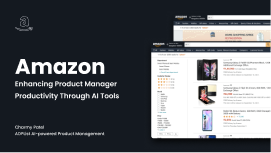
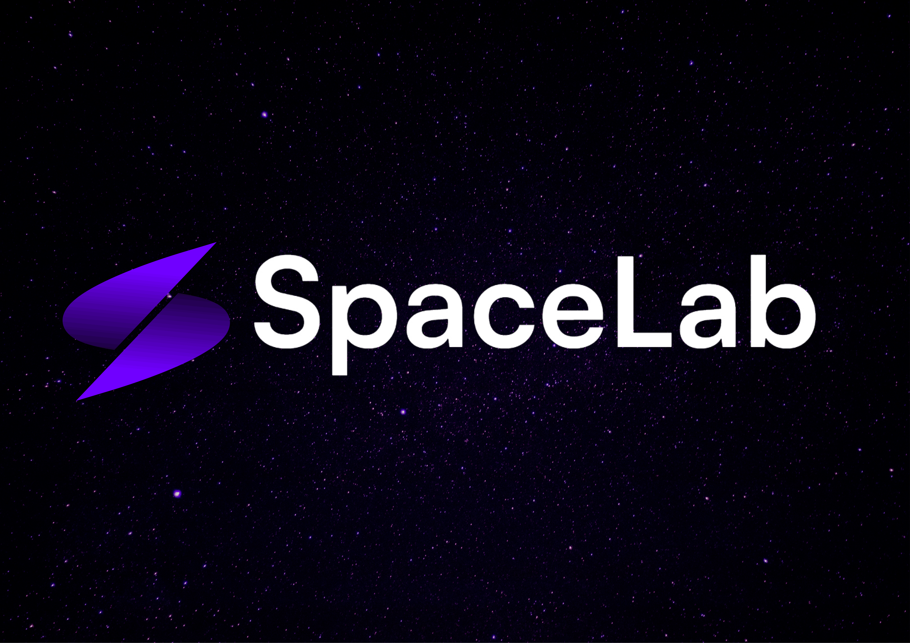
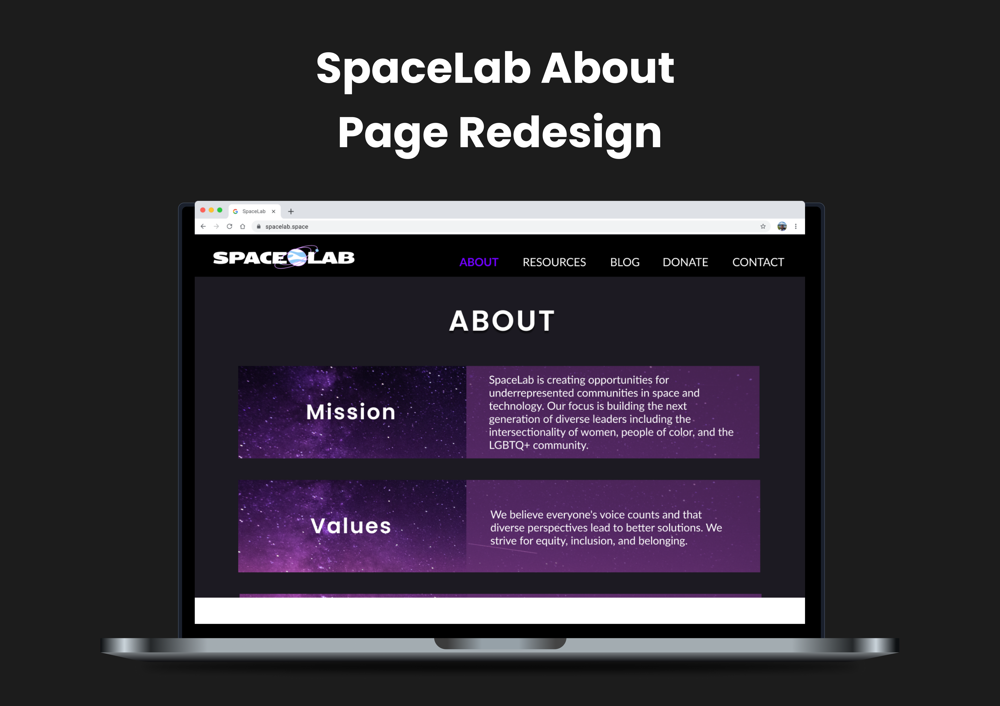
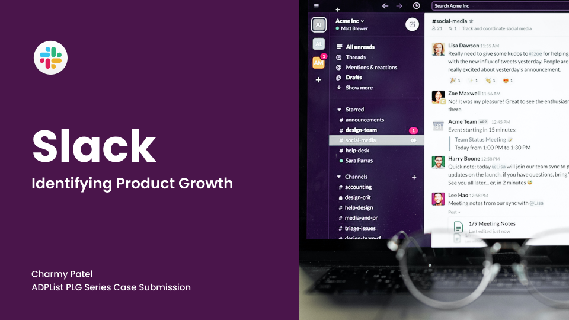

Case submission for ADPList's AI-powered Product Management course.



Case submission for ADPList's AI-powered Product Management course.
I had the pleasure of working with Charmy on the Aspire Supplier Portal redesign at ASI, where I served as the Senior Product Manager leading the initiative and Charmy supported the effort as a Junior Product Manager.
Charmy quickly became an invaluable member of the product team, contributing to product discovery, requirements definition, backlog management, and stakeholder collaboration. She was particularly effective at translating business needs into well-defined user stories and epics, partnering closely with engineering teams to refine requirements and support successful delivery. Her attention to detail, strong organizational skills, and ability to take ownership helped our team operate more efficiently and allowed me to focus more time on customer discovery and product strategy.
Beyond her execution skills, Charmy consistently demonstrated curiosity, professionalism, and a strong desire to learn and grow as a product manager. She is a collaborative teammate, a thoughtful problem solver, and someone who can be trusted to follow through on commitments. I would recommend Charmy to any organization looking for a motivated and capable product professional.
I had the pleasure of working directly with Charmy as her Senior Product Designer on the ASI Supplier Central project, and she is one of the most dependable, skilled product managers I've had the privilege of collaborating with.
Charmy is sharp, humble, and someone who takes full ownership of her work and consistently delivers with care.
Working alongside Charmy as her design lead was a seamless and rewarding experience. She understood the value of design early in the process and made sure it was part of every key conversation. Together, we aligned on user and business needs, shaped the product roadmap, and translated customer feedback into meaningful product decisions that strengthened the overall user experience.
Charmy is a fast learner who always follows through. She is someone you can count on to get things done thoroughly and with real impact. Charmy would be an incredible asset to any team.
I had the pleasure of working with Charmy on the Aspire Supplier Portal Redesign at ASI, where I served as the UX Researcher focused on improving the supplier experience. Charmy was an exceptional product manager and partner throughout the process.
She consistently helped coordinate stakeholders, cross-functional team members, and research efforts to ensure our work stayed aligned with both user needs and business goals. At every stage of the project, Charmy was communicative, organized, and thoughtful about how she could support the research process, from helping shape our approach to ensuring the right voices were involved. She was highly effective at planning sprint work, prioritizing what needed to be executed, and managing team capacity to ensure the right work moved forward.
One of the things I appreciated most was her dedication to learning directly from our users. Charmy often joined research interviews to better understand our suppliers, hear their feedback firsthand, and bring those insights back into the product conversation. Her curiosity, attention to detail, and strong sense of ownership made her a valuable partner and a trusted member of the product team.
I highly recommend Charmy to any organization looking for a product manager who can lead with clarity, bring teams together, and help deliver meaningful results through both discovery and execution.
I had the pleasure of working with Charmy on the ASI Supplier Central project, and she brought a level of clarity and collaboration that made the whole process easier for everyone involved.
She's detail-oriented and organized, someone who manages every moving piece with poise even when priorities shift or feedback piles up. Even when things got complex, she kept everyone aligned without adding stress to the process.
Charmy is thoughtful, easy to work with, and someone who takes real ownership of outcomes. Any team would benefit from having her on board.